Developed during a one-week workshop at the UPDATE Festival in Liepāja, this project explores the city’s former military fortifications and the layers of history, decay and contemporary art embedded within them. This website serves as a record of a place that is still changing, before it disappears.
We’re taking you inside of what more still survives..
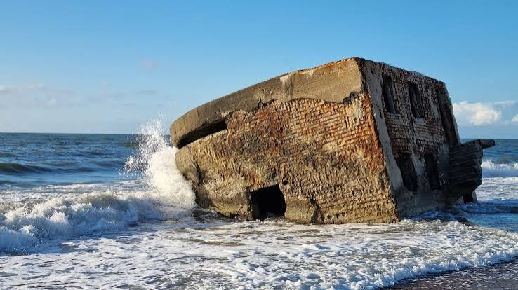
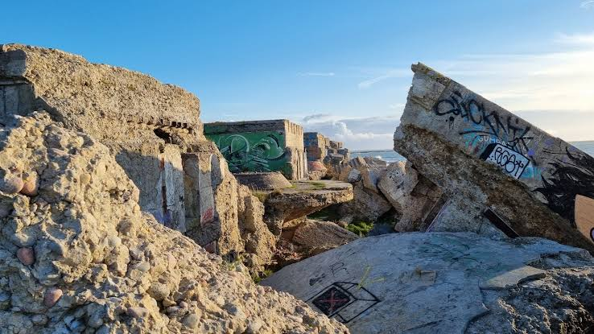
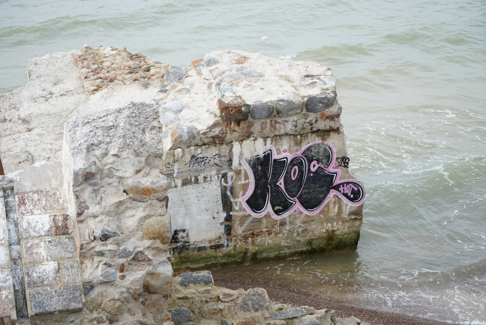
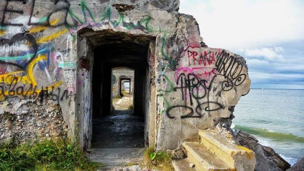
1908,
Less than a decade after construction began, the Liepāja Fort was abandoned and officially deemed a strategic error. Some of the cannons were dismantled and transferred to the Kaunas Fortress in Lithuania, while the remaining guns were melted down. The fortifications were subsequently demolished through controlled explosions, leaving only partially destroyed artillery batteries, underground structures, and powder magazines standing today.
Situated along the coast, the bunkers are continuously exposed to erosion, wind, and the forces of the sea. Over time, these natural processes have caused parts of the structures to disappear, with further deterioration already taking place.
The surviving walls take on a new life..
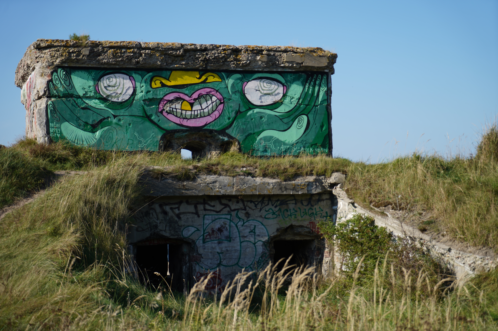
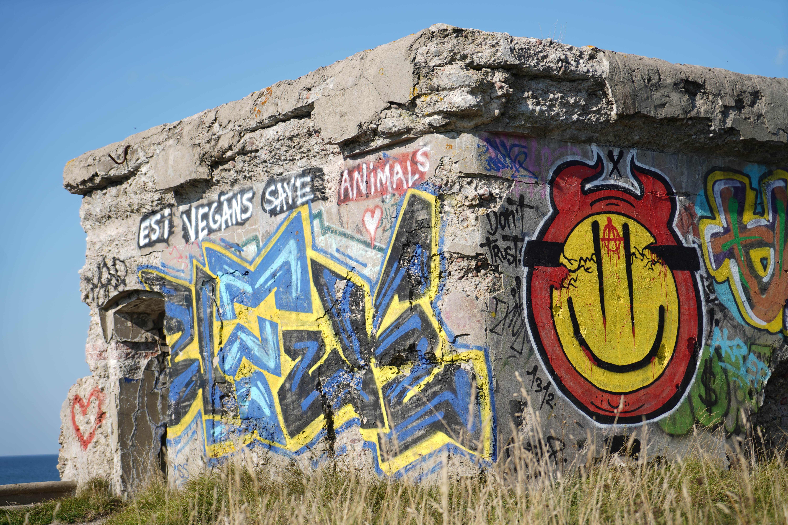
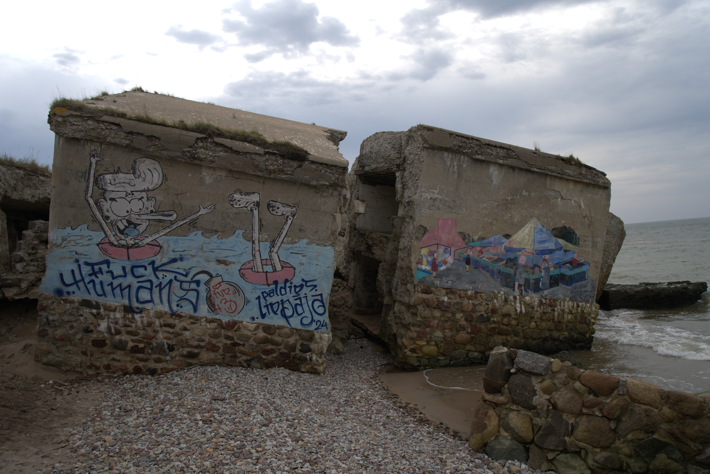
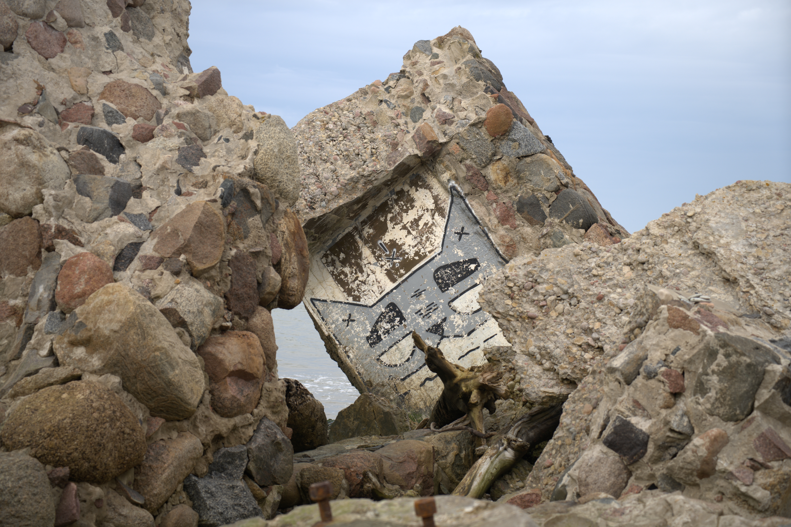
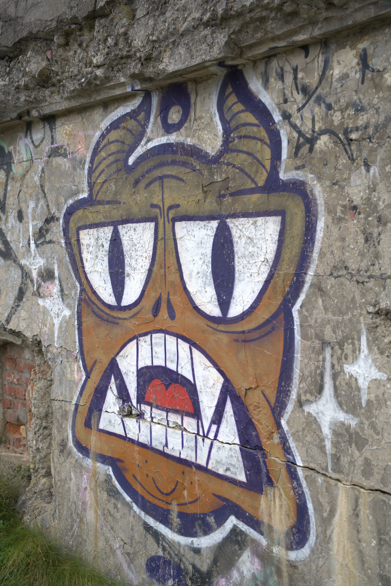
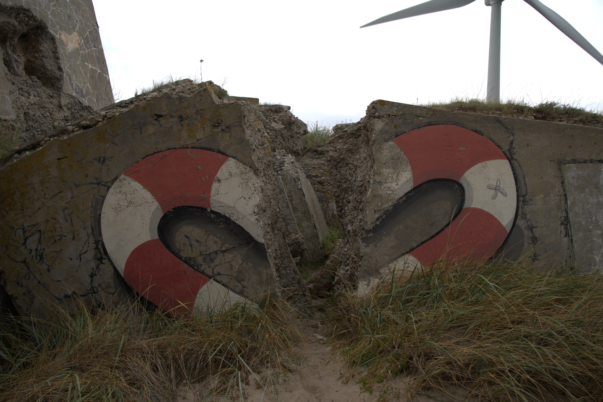
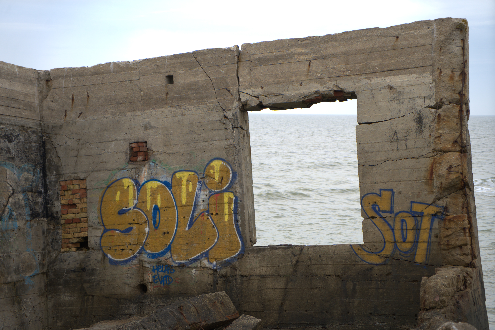
Alicia Götzvel
Elizabete Sveiduka
Mega Diagma
Shafikul Islam Shuvo
Prof. Julia Schnitzer
Christoph Luchs
Liepāja Municipality — History of Liepāja
Liepāja Travel — Northern Fort
Picture 1-3: PastVu
Picture 4-5: LNB Digital Library
All other rescources were created by the project team.
This educational project was developed within the framework of RTU as part of the UPDATE Festival.